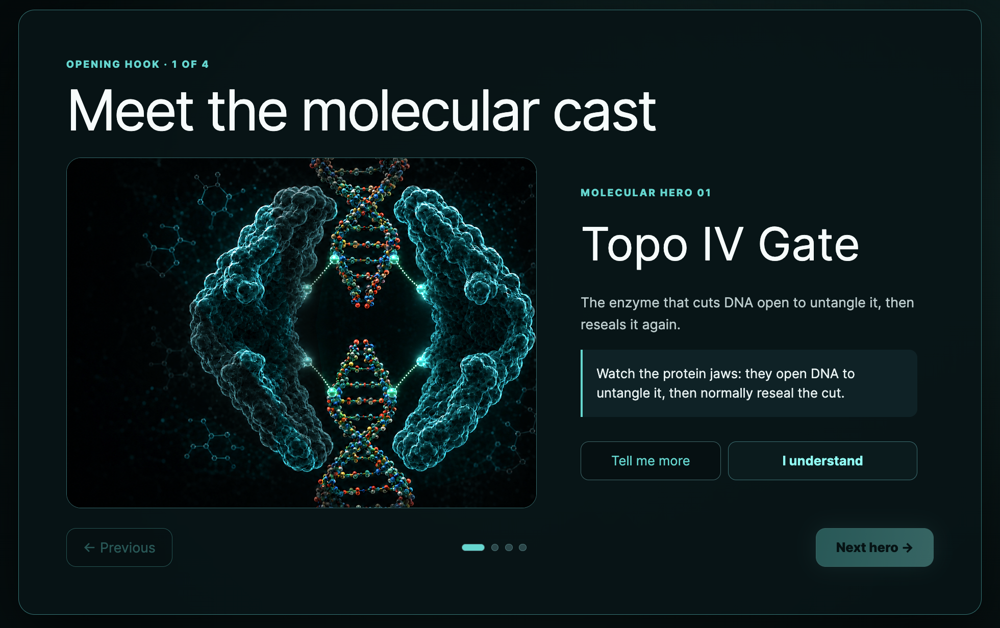
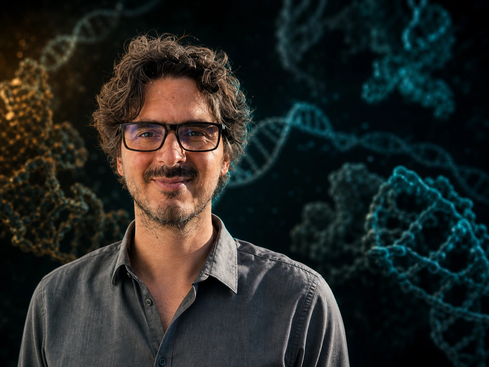

6 playable stages12–16 minEN · LV · FRBrowser based
The proposition
A published molecular mechanism becomes a mission players can understand by doing.
Players do more than click through facts. They inspect a DNA break, align and insert moxifloxacin, construct a magnesium-and-water bridge, then compare a resistant mutation with the working molecular trap.
Curiosity through interactionPlayers engage directly with the molecular mechanism by examining structures, testing relationships and observing the consequences of their decisions.
Learning through feedbackClear, immediate feedback helps players connect each action with the underlying biological process.
Designed without distractionThe game avoids unnecessary movement and overstimulation, so players can concentrate on the task and explore the challenge at their own pace.
The playable journey
From story to discovery.
Follow the evidence through seven connected moments. Each step reveals another part of the molecular mechanism.

01 / 07
Opening storyEnter the DNA gate
Begin with the research story, then step inside the molecular mechanism you will investigate.
Research integrity
The research and scholar behind it stay visible.
Developed with structural biologist Dr. Alexandre Wohlkonig. The game connects every interaction back to the published evidence and introduces players to the people behind the discovery.
Players learn how molecular structures work by inspecting, aligning and comparing them.
Structural biologist · Antibacterial drug discovery

We wanted to see, atom by atom, exactly how an antibiotic jams the machine bacteria use to copy their DNA – and what changes when the germ becomes resistant.
The real research
The team used X-ray crystallography to reveal how moxifloxacin wedges into cut DNA and connects to Ser84 and Glu88 through a magnesium-and-water bridge.